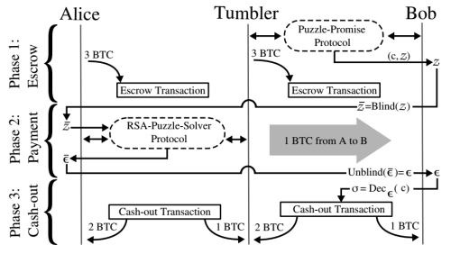

NEXT Breaking the Crypto used in IOTA
09-06-2016 9:36PM (ET)

Our new research project TumbleBit is a unlinkable private payment hub that runs on today’s Bitcoin. It is designed to allow people to use Bitcoin without having to worry about exposing their payment history on the blockchain. TumbleBit allows parties to make fast, anonymous, off-blockchain payments through an untrusted intermediary. TumbleBit’s anonymity properties are similar to classic Chaumian eCash: no one, not even the Tumbler, can link a payment from its payer to its payee. Every payment made via TumbleBit is backed by bitcoins, and comes with a guarantee that Tumbler can neither violate anonymity, nor steal bitcoins, nor “print money” by issuing payments to itself. We prove the security of TumbleBit using the real/ideal world paradigm and the random oracle model. Security follows from the standard RSA assumption and ECDSA unforgeability. We implement TumbleBit, mix payments from 800 users and show that TumbleBit’s off-blockchain payments can complete in seconds.
Our paper can be found on eprint and a proof of concept implementation is available on github.
I will be posting more information and updates on TumbleBit here in the coming weeks. If you are interested in staying up to date on TumbleBit follow ethanheilman.tumblr.com or follow me on twitter @Ethan_Heilman.